flowchart TB G["Gene: three exons separated by introns"] G --> A["Baseline<br/>1 — 2 — 3"] G --> B["Different start<br/>shorter 1 — 2 — 3"] G --> C["Exon skipping<br/>1 — 3"] G --> D["Different 3′ end<br/>1 — 2 — shorter 3"]
3 Session 3: Biological Databases
Notebook: Session 3 — Biological Databases in code — the code behind this page. Download it to run it yourself.
NoteSources and figure provenance
This chapter develops Petras Kundrotas’s KB8029 teaching materials, Databases of Sequence Information (2026–2027), around biological questions and linked records. Provider documentation and original research are linked beside the claims they support; the Further reading and Further watching lists offer optional explanations.
Data and figures. The simple diagrams are course illustrations, not experimental observations. The record-anatomy figure is drawn from the NCBI records for NM_000518.5 and NP_000509.1; the browser figure is output from UCSC’s hgRenderTracks service. The two PubMed figures in the literature section are browser screenshots captured on 12 November 2026 for Petras Kundrotas’s lecture slides, reused here with their teaching annotations; the page text is unaltered. Those two figures retain the 5 November 2026 snapshots used to prepare them. Sequence versions, annotation releases and retrieval dates distinguish a saved example from a current database result. Sizes, prices and search-result counts are dated examples, not fixed properties of a resource.
Reuse and attribution. EMBL-EBI Training material carries CC BY 4.0, unless otherwise indicated. This does not assign that licence to every database hosted by EMBL-EBI. NCBI’s policy distinguishes US-government text from contributed material; Ensembl’s data policy and UCSC’s graphics and data policy describe their respective reuse conditions. Original articles retain their stated licences.
Earlier versions also drew on the following Wikipedia articles, credited here under CC BY-SA 4.0: Biological database, Sequence database, INSDC, GenBank, UniProt, RefSeq, Accession number, Genome browser, UCSC Genome Browser, Ensembl, PubMed, PubMed Central, MEDLINE, bioRxiv and Boolean search. The chapter has been reorganised and rewritten for this course.
3.1 Learning goals
By the end of this session you should be able to:
- choose appropriate DNA, RNA or protein databases for a biological question, connect records using identifiers, versions and cross-references, and trace individual claims to their sources and evaluate their supporting evidence;
- compare command-line or programmatic access, database-specific web pages and genome browsers, and use UCSC or Ensembl to retrieve genomic, transcript and protein sequences through one interface, recording the organism, assembly and versioned identifiers;
- find scientific literature through databases, scholarly search engines and AI-assisted tools; use PubMed as a worked example to construct and check queries, locate publications and available full text, and verify suggested references and claims against the original sources.
Rather than listing databases one by one, the reading uses human beta-globin (HBB) to connect genomic DNA, RNA transcripts and protein information. Several databases may help answer the same biological question, offering complementary records, annotations and evidence. The aim is to recognise the information needed and check what supports it.
3.2 What is a biological database?
A biological database is an organised collection of biological data that supports searching and retrieval. Its records may describe genes, transcripts, proteins or structures and contain sequences, annotations, identifiers and links to related information. These features help us find a record and connect it to other records.
Database management software handles storage, updates and retrieval, while computer hardware provides storage and computing power. A database website gives users an interface for searching and viewing records in a web browser. The website is one way to access the underlying data. Depending on the resource, downloads and programmatic interfaces provide other routes, as discussed later in this session.
We still need to check the evidence. Inspect the underlying data and their quality, how an annotation was obtained, and whether cited experiments support the claim. Inclusion in a trusted database does not by itself establish that every annotation is correct. Search the literature for additional findings, and record accessions, sequence versions and retrieval dates so that the data used in an analysis can be checked again. Behind database records explains how experiments, analysis and curation contribute to this information.
Further reading
- BBC Bitesize, Information Systems, a short illustrated introduction to records and fields.
3.3 Why coordinated, worldwide databases
3.3.1 When data outgrow the lab
Downloading database releases for local searching has long been part of bioinformatics. Fixed local snapshots of external data remain useful for reproducible analysis. Some collections still fit on ordinary laboratory hardware. For example, the PDB Core archive, about 1.5 TB as of 1 January 2026, would fit on a 4 TB hard drive. Other collections, such as the Sequence Read Archive (SRA), with more than 50 PB of unique data in April 2026, would require thousands of such hard drives, with a budget of tens of millions of Swedish kronor for the drives alone.1
Thus, keeping the entire archive locally is impractical for an ordinary research laboratory. Instead, public data centres maintain the full collections, while researchers retrieve the subsets of data needed for their particular questions or analyse entire datasets using shared computing infrastructure.
For nucleotide sequences, such shared infrastructure is provided by the International Nucleotide Sequence Database Collaboration (INSDC). It connects NCBI in Bethesda, USA; EMBL-EBI in Hinxton, near Cambridge, UK; and DDBJ at the National Institute of Genetics in Mishima, Japan. These partners operate resources with different scopes. For example, NCBI provides GenBank and the Sequence Read Archive, while ENA brings reads, assembled sequences and annotations together within one resource. The collaboration preserves the data while providing several ways to find and retrieve them.
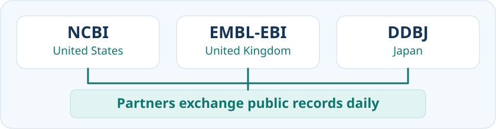
Researchers submit sequence data to one appropriate partner. Public records and updates are exchanged daily, and a shared archival sequence record keeps the same accession across the partner resources. As NCBI’s submission guide explains, submitting the same data to all three is unnecessary. Finding that record through three websites provides alternative access to shared data, rather than three independent pieces of experimental evidence.
The partners use common annotation standards, while their web interfaces, search tools and downloadable formats can differ. Newly released data and updates may reach individual websites and search indexes at different times. Choosing between the services is therefore a question of which interface or access method suits the task, while the accession identifies the shared record.
Publicly released INSDC data are freely accessible, but a submission may remain confidential until its release date and controlled-access human data are excluded from the public exchange. An archived record preserves submitted data and annotations without necessarily collecting every later finding about that sequence.
3.3.2 Connected records from one investigation
An investigation produces several kinds of information, so a database needs more than a sequence record. Project and sample records describe the context of the work, while read and assembled-sequence records preserve different stages of its results. Following the links between these records helps us establish what a dataset represents and where its evidence came from. The ENA quick tour introduces this organisation.
| Record type | Question it helps answer | Typical information |
|---|---|---|
| Project or study, such as BioProject | What investigation produced these data? | The study’s purpose and scope, submitting organisation, publications and links to datasets. |
| Sample, such as BioSample | What biological material was examined? | The organism, source material and relevant collection information. |
| Sequencing reads, held in a read archive | What individual sequencing observations are available? | DNA or RNA read sequences and quality information, linked to records describing the library, instrument and experiment. |
| Assembled sequences and annotations | What longer sequence was reconstructed, and which features were identified? | Sequences reconstructed from reads and descriptions of features such as genes. |
These are linked record types, not four separate databases with identical names at every partner. A project may contain several samples and sequencing runs, and an assembly may use data from several runs. Researchers reconstruct sequences before depositing an assembly, and the archive stores that result. Each related record has its own identifier, so following a cross-reference is different from viewing the same shared record through another partner’s interface.
The course notebook starts with a small comparison of one submitted human HBB mRNA record through NCBI, ENA and DDBJ. It checks the accession and version, organism and sequence before selected examples of transcript-field parsing and UniProt record checks. This illustrates how to recognise shared data even when their descriptions or page layouts differ.
3.3.3 When archives and access routes change
Archives develop as sequencing methods and computing needs change. Trace Archive was a specialised read archive, chiefly associated with capillary sequencing such as Sanger sequencing. It stored chromatograms, the instrument signals displayed as coloured peaks, together with DNA sequences inferred from those signals and estimates of confidence in the identified bases. Newer read archives developed to manage high-throughput sequencing and now also accept capillary data. Their roles therefore overlap, even though their names and original designs differ.
An older publication may consequently point to a website that no longer works. Retain its record identifier and consult the provider’s current retrieval instructions before concluding that the data have disappeared. NCBI’s Access Trace Data guide shows how former Trace Archive data can be located through SRA. Check which files are available: access to read sequences and quality scores does not establish that every original signal recording remains downloadable.
NoteOptional example: the changing Trace Archive services
- EMBL-EBI: ENA brought together the nucleotide sequence collection, Trace Archive and SRA in May 2010. Trace searches and viewing through its website ended in February 2017, while direct file downloads remained available at that time. Integration of a collection and retirement of an interface were separate events.
- NCBI: the separate Trace Archive retired on 17 June 2022. NCBI states that its former Trace Archive data were transferred to SRA.
- DDBJ: DTA had closed by 12 April 2023, as documented in its official website history. This is a documented upper limit, not a verified shutdown day. DDBJ’s current guidance directs historical trace-data retrieval to SRA and new capillary submissions to DRA. It does not describe DTA simply becoming DRA.
A surviving example is run SRR9451988, linked to experiment SRX6217698. Its record describes a Trace conversion and a DNA library labelled HBB. The organism is olive baboon, Papio anubis, rather than the human HBB used in our main example. The label is a search clue, not proof that every read overlaps HBB. This optional example illustrates why checking the organism and available evidence remains necessary when the access route changes.
Further reading
- EMBL-EBI Training, The role of public databases, a short introduction to the centres that maintain and share biological data.
- EMBL-EBI Training, Data sharing collaborations, connecting INSDC to collaborations for proteins, structures and other data.
- EMBL-EBI Training, What is ENA?, an optional example explaining raw reads, assemblies and sequence annotation.
- EMBL-EBI Training, How is ENA structured?, a short visual explanation of projects, samples, reads, assemblies and annotations.
- NCBI, Access Trace Data, optional practical guidance for following historical records into a current service.
3.4 DNA, RNA and protein: connected records
The central dogma of molecular biology provides a familiar framework for connecting DNA, RNA and protein information. For a protein-coding gene, transcription copies DNA sequence information into RNA, and translation uses an mRNA’s coding region to produce a polypeptide. Many RNAs function without being translated. Databases record these related biological objects and connect them through cross-references. A link helps us move between records, while the evidence attached to an annotation tells us how that claim is supported. The resources below are examples, not an exhaustive list. Specialist databases focus on particular information, while broader resources combine several kinds.
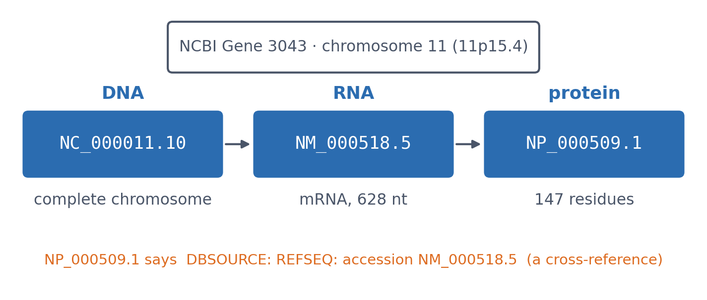
3.4.1 DNA-level data: genome to gene
DNA-level records describe genomic sequences and the features annotated along them. We can examine a genome assembly, a chromosome, a smaller DNA region or an individual gene, depending on what we want to learn.
A genome assembly is a reconstructed representation of an organism’s DNA sequence. Its completeness depends on the available data and assembly quality. A chromosome carries part of the genome, and different chromosome types contain different DNA sequences and sets of genes. Examining a chromosome helps us ask which genes it contains, how they are arranged and whether a large deletion or rearrangement affects several genes. We can then focus on a smaller DNA region or an individual gene, as Figure 3.5 shows. These are different scales of genomic information.
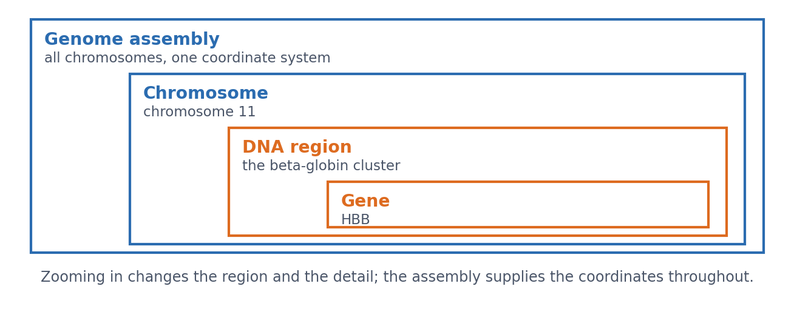
How much DNA we examine depends on the biological question. To work out which amino acids are encoded by HBB, we examine its coding sequence. To investigate how HBB activity is controlled, we also need to examine surrounding DNA. HBB belongs to the beta-globin cluster on chromosome 11, where noncoding regulatory sequences help control gene activity. The best-known of them is the locus control region, which governs the whole cluster from well outside any of the genes it controls — a concrete reason why a window drawn tightly around one gene can miss what decides its expression. Looking only at the coding sequence would omit this context. Within HBB itself, the genomic sequence also contains introns and untranslated parts of exons.
GenBank, ENA and Japan’s DDBJ Annotated/Assembled Sequences preserve sequences deposited by researchers, from chromosome sequences to smaller DNA fragments. RefSeq maintains reference sequences that researchers use as common starting points for describing and comparing genomes, transcripts and proteins. A reference record contains the sequence, its identifier and annotations, such as the locations of genes or coding regions. Ensembl provides genome assemblies together with gene and transcript annotations. You may therefore find information about the same DNA region in several resources. Check what each record represents and how its annotations were obtained. Raw sequencing reads, an assembled sequence and an annotated reference are different kinds of data, even when they concern the same organism or gene.
Further reading
- NHGRI, Chromosome, a short introduction to chromosomes and how they carry genetic information.
- NCBI, Genome assembly glossary, explaining assemblies and their components.
3.4.2 RNA-level data: sequence, function and expression
RNA-level resources describe the RNA products transcribed from DNA, including protein-coding and noncoding transcripts. They help us investigate both which RNA sequences exist and where those RNAs are detected or how abundant they are.
3.4.2.1 Transcript sequences
A transcript record describes an RNA sequence and its relationship to a gene. RefSeq and Ensembl provide reference transcripts and annotations, while GenBank, ENA and DDBJ preserve submitted RNA sequences. The mature transcript of a spliced gene contains joined exons, including untranslated regions where present. Its sequence therefore differs from the genomic region containing introns.
Further reading
- NCBI, About RefSeq, introducing reference sequences and their annotations.
3.4.2.2 One gene, several transcripts
Different transcription starts, alternative splicing and alternative cleavage/polyadenylation can produce several RNA sequences from one gene. Figure 3.6 illustrates these possibilities with a generic three-exon gene. Ordinary alternative splicing retains the genomic order of the selected exons. These mechanisms can occur together, and differences in untranslated regions can leave the encoded protein unchanged.
Two transcripts, same gene? Follow their links to the gene record. Transcripts assigned to the same gene share a linked gene identifier within the same organism, database and annotation release. For example, several human Ensembl transcript identifiers beginning with ENST can link to one gene identifier beginning with ENSG. Keep the separate transcript identifiers and versions when selecting sequences. Across databases, follow cross-references and check their context rather than compare identifier text alone. The notebook provides a supplied-transcript parsing example; the lab asks you to investigate the biological relationships.
Further reading
- Ensembl, Stable identifiers and versions, explaining how gene and transcript records are identified.
3.4.2.3 Noncoding RNA sequences and families
Noncoding RNAs are also transcripts, but function without encoding proteins. RNAcentral integrates noncoding RNA sequences from specialist resources. Rfam groups related structured RNAs and regulatory RNA elements into families using sequence and base-pairing information. A sequence record and a family record answer different questions. For example, Rfam’s RF00005 groups transfer RNAs (tRNAs). These help assemble proteins by delivering amino acids to ribosomes, including when HBB mRNA is translated into beta-globin. The connection to HBB is through protein synthesis: these tRNAs are not HBB transcripts.
Further reading
- RNAcentral introduction and Rfam introduction, distinguishing sequence integration from RNA families.
- NHGRI, Transfer RNA (tRNA), explaining its role in protein synthesis.
3.4.2.4 RNA expression
Expression data describe where RNA is detected and how abundant it is. A transcript sequence alone does not establish its abundance in a tissue. GEO (Gene Expression Omnibus at NCBI in the USA) and Japan’s Genomic Expression Archive (GEA) preserve studies and their sample descriptions. For sequencing submissions to GEA, raw reads are deposited in DRA. Expression Atlas curates and analyses selected studies. Check whether measurements distinguish transcripts or report gene-level abundance, and compare samples, methods and units before interpreting differences.
Gene expression produces RNA and, for protein-coding genes, protein. Expression measurements concern these products, such as the amount of RNA detected in a sample. DNA sequence, DNA copy number and regulatory features are examined separately because they describe the genetic instructions and their regulation. RNA and protein abundance can differ because translation and protein degradation affect how much protein accumulates.
Further reading
- Expression Atlas introduction and GEA sequencing submissions, explaining expression results and their underlying data.
3.4.2.5 RNA written with DNA letters
An RNA sequence can be written using U or represented with T, as in AGCUUCGA and AGCTTCGA. DDBJ explicitly uses the second convention for RNA records, including noncoding RNA. Using T does not establish that a sequence is genomic DNA or that a physical cDNA copy was made. Read the record’s molecule type and annotations to identify what the sequence represents.
Further reading
- DDBJ, Codes for nucleotide sequence, the passage stating the T-for-U writing convention.
3.4.3 Protein-level data: sequence, structure and function
Protein-level records describe amino-acid sequences and connect them to structure, function and cellular context. Different resources specialise in these aspects, so we follow links between records and check the evidence for each annotation.
3.4.3.1 Amino-acid sequence and annotation
A protein sequence tells us which amino-acid chain we are examining. Sequence records can also describe variants and link to the DNA or RNA records from which the sequence was derived. UniProtKB (discussed in more detail later in this session) and NCBI Protein are examples of resources providing protein sequences with annotations and cross-references.
For HBB, the reference transcript NM_000518.5 links to protein NP_000509.1 and UniProt entry P68871. A small UniProt record check in the notebook demonstrates how to inspect selected fields and cross-references in a structured response.
3.4.3.2 Three-dimensional structure
A protein structure record may contain a model derived from experimental measurements or a computational prediction.
- Experimental structures are stored in the Protein Data Bank (PDB). RCSB PDB, PDBe and Japan’s PDBj provide different interfaces to this shared archive. Entry
2HHBis human deoxyhaemoglobin, two alpha and two beta chains, determined by X-ray diffraction at 1.74 Å resolution (Fermi et al. 1984). Resolution describes the experimental data: the smaller the number, the finer the detail the data could resolve. - Predicted models are available through resources such as the AlphaFold Protein Structure Database. Its models include a per-residue confidence score, pLDDT (0-100). Higher values indicate greater confidence in the local predicted structure, rather than experimental confirmation. Very low confidence can have several causes, including intrinsic disorder (Session 12). The AlphaFold model for
P68871illustrates how confidence varies along a sequence.
A resolution and a pLDDT are therefore not the same kind of number. Resolution describes experimental detail, whereas pLDDT estimates confidence in a prediction. Inspect the supporting data, methods and limitations even when two molecular pictures look similar. Session 6 examines protein structures, and Session 12 shows how AlphaFold predicts them.
Further reading
- wwPDB archive access, including RCSB PDB, PDBe and PDBj.
- AlphaFold DB, providing predicted structures and confidence information.
3.4.3.3 Domains and families
A protein domain is a compact part of a protein that can often fold into a stable structure on its own. Domains and their structural organisation are discussed further in Session 6. A protein family groups related proteins. InterPro (EMBL-EBI) combines domain, family and site annotations from specialist resources, including Pfam. Pfam’s standalone website was retired in 2023, and its entries can be accessed through InterPro.
For example, InterPro identifies a globin domain in HBB and assigns the protein to the beta-type haemoglobin family. These are complementary descriptions of the same protein, so several annotations do not necessarily indicate several domains.
SCOP (Structural Classification of Proteins) classifies domains with known three-dimensional structures according to structural similarities and evolutionary relationships. Sequence-based domain matches and structural classifications provide related ways to investigate a protein.
Further reading
3.4.3.4 Interactions and associations
Interaction resources organise different kinds of evidence about relationships between proteins. They often present these relationships as networks, where nodes represent proteins and the lines between them, called edges, represent connections:
- IntAct (EMBL-EBI, part of the IMEx consortium) curates individual physical interactions from published experiments.
- BioGRID curates experimental physical and genetic interactions. Genetic interactions describe the effects of combined gene perturbations, rather than necessarily showing physical contact between proteins.
- STRING combines curated interactions, co-expression, conserved gene neighbourhood, predictions and text mining into one score per protein pair. It answers a broader question, “which proteins are functionally associated?”, with a mixture of experimental and predicted evidence.
- FunCoup (Stockholm University, Sweden) combines several kinds of evidence to infer functional associations between genes and proteins.
The meaning of a network connection depends on the resource and its evidence. Two proteins might bind directly, occur in the same complex without touching, or contribute to the same biological process. A STRING association can therefore support a functional relationship without establishing physical contact. Check the evidence behind a particular connection before describing the proteins as binding partners.
Further reading
- IntAct and BioGRID introduction, for curated interaction evidence.
- STRING, What is a STRING network?, explaining the relationships represented by network connections.
- FunCoup, for functional gene and protein association networks.
3.4.3.5 Abundance and location
Knowing a protein sequence does not tell us how much protein is present or where it occurs. The Human Protein Atlas provides information about human proteins across tissues, cells and subcellular locations, including microscopy and abundance measurements. Microscopy can reveal which parts of a cell contain a protein. Comparing protein amounts requires suitable measurements and information about how the samples were analysed. RNA and protein measurements must also be distinguished because translation and protein degradation affect protein abundance.
Further reading
- Human Protein Atlas introduction, explaining its complementary resources and methods.
3.5 Behind database records
DNA, RNA and protein records describe different biological objects, but their information can come from several sources. Researchers submit experimental outputs and processed results, and databases may import information from other resources. An archival submission tells us who supplied the information. To understand a particular result or annotation, we also need to examine how it was obtained and what supports it.
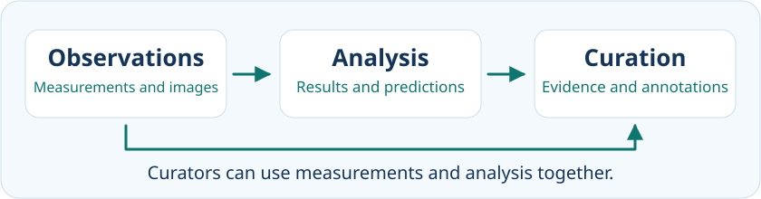
3.5.1 Experiments generate raw data
Experiments produce measurements and observations that provide a starting point for analysis. Here, raw data means the original experimental output retained for the analysis being discussed. Instruments and acquisition software may already have performed some processing, so the term does not necessarily mean completely untouched data.
Sequencing signals may be changes in fluorescence or electrical current that software interprets as nucleotide letters. Experimental images can record cell appearance or fluorescent signals, while other instrument readings include absorbance measurements and mass spectra. Phenotypic observations describe observable characteristics, such as cell shape, growth or behaviour. These examples overlap because sequencing signals and images are also instrument outputs. They illustrate different forms in which experimental observations can be recorded.
The observations need their experimental context. The organism, sample, conditions, methods and measurement units help us interpret what was recorded and compare it with other work. This is why archives connect data files to project, sample and experiment information. Data and their context together make it possible to check and reanalyse an investigation.
Further reading
- NHGRI, DNA sequencing and Phenotype, introducing sequence measurements and observable characteristics.
- EMBL-EBI Training, How is ENA structured?, connecting sequencing data to their project and sample descriptions.
3.5.2 Analysis produces results and predictions
Analysis turns observations into interpretable results and can infer additional properties. Software can assemble sequence reads into longer sequences, calculate RNA-abundance estimates and translate a coding region into an amino-acid sequence. These are derived results. Computational translation establishes which amino-acid sequence the selected coding region encodes, but does not establish that the protein was detected experimentally.
Other analyses assign domains from sequence information or produce three-dimensional structural models. Some structural models are fitted to experimental measurements, while others are computational predictions. Both involve analysis, but their supporting evidence differs. We therefore need to know the method and input data behind the result, rather than treating every derived result as the same kind of prediction.
Further reading
- RCSB PDB-101, Methods for determining structure, explaining how measurements contribute to atomic models.
3.5.3 Curation evaluates and connects information
Curation assesses experimental findings and computational results, then organises them into useful records. Curators examine whether the evidence supports particular annotations, the descriptions of features or biological properties attached to a record. They compare findings across studies and consider whether different methods or conditions explain apparent disagreements. They also link related records and create or update annotations, recording uncertainty where necessary.
Curation is a process that can examine both experimental and computational information. A reviewed record can therefore contain experimentally supported findings alongside predictions or other interpretations. The review status tells us how the record has been assessed, while the evidence attached to an individual annotation tells us how that claim is supported.
Further reading
- EMBL-EBI Training, Manual curation and Data evidence, explaining how experimental findings and computational analyses contribute to reviewed records.
3.5.4 HBB: results and supporting evidence
Human HBB illustrates how related records can contain information obtained in different ways. The HBB transcript checks in the notebook start with the assembled, annotated RefSeq mRNA record NM_000518.5. We extract its annotated coding region, calculate the beta-globin amino-acid sequence and compare it with the translation stored in that same record. Agreement is an internal consistency check. It does not independently demonstrate that the protein was detected experimentally.
A globin-domain assignment provides another kind of information derived from sequence analysis. A three-dimensional model containing beta-globin may instead be fitted to experimental measurements or generated by structure prediction. These results can describe related biological molecules without originating from the same experiment. Their methods and supporting sources therefore need to be checked separately.
Curation helps connect transcript and protein records, annotations and relevant publications. When using a statement about HBB, identify the particular claim and follow its supporting evidence. A cross-reference helps us find a related record, but does not establish that both records have the same experimental basis. We next need identifiers to specify these records precisely and follow their connections.
3.6 Finding records through names and identifiers
To evaluate information in a database, we first need to find the relevant record. Biological names and symbols provide useful search terms. Record identifiers then allow us to specify what we selected, retrieve it again and follow its connections to other information.
Human HBB, the gene encoding beta-globin, will illustrate these steps.
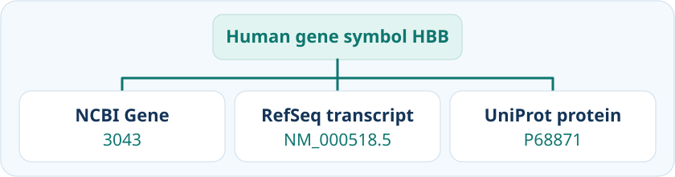
3.6.1 Searching by name
A descriptive query such as human hemoglobin beta provides a useful starting point. Searching across the collections indexed by NCBI or EMBL-EBI can return gene records, nucleotide sequences, protein entries, expression studies and publications.
These results address different questions. A gene record can help us locate HBB in the genome. A protein entry can describe beta-globin’s function. An expression study can provide measurements of RNA abundance under particular experimental conditions.
Before choosing a result, identify the kind of information needed. Search categories help us select an appropriate collection. The number of matches depends on the search service’s coverage and interpretation of the query, so counts from different services are not directly comparable.
3.6.2 Searching within a selected resource
Once we know what information we need, we can search within a suitable resource.
For a question about the human gene, NCBI Gene is a useful starting point. After searching, check the gene description and organism. The appropriate human HBB gene record has Gene ID 3043. Its sections provide genomic context and links to transcripts, protein products and other information.
Expression displays require an additional check. A graph represents particular samples, methods and conditions. Follow its study and publication links to understand where the measurements came from.
For protein sequence and functional information, search UniProtKB. Organism filters help restrict results to Homo sapiens. A reviewed-entry filter selects entries that have undergone manual curation, but we must still check the protein name. Several human haemoglobin subunits can match a descriptive query.
The human beta-globin entry is P68871. After confirming its identity, examine the annotation relevant to the question and follow its supporting evidence. Review status describes the assessment of the entry. Individual annotations may have different kinds of supporting evidence. EMBL-EBI’s UniProtKB introduction explains this distinction.
UniProt’s protein-existence level addresses evidence that a protein exists. The levels are 1, evidence at protein level; 2, evidence at transcript level; 3, inferred from homology; 4, predicted; and 5, uncertain. HBB (P68871) has level 1. This does not mean that every functional annotation or every residue in the displayed sequence has been experimentally confirmed. Check the evidence for the specific claim you intend to use. See UniProt’s explanation of protein existence.
NoteOptional reading: how UniProt is organised
UniProt provides several datasets for different purposes:
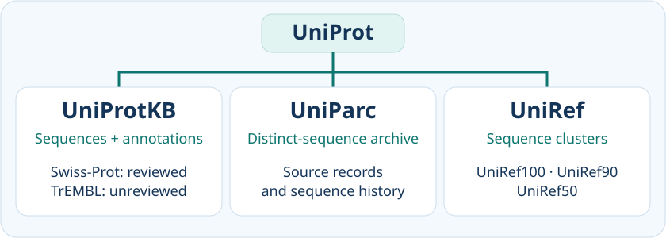
- UniProtKB combines protein sequences with functional annotations and cross-references. Swiss-Prot contains reviewed entries, while TrEMBL contains computationally annotated, unreviewed entries.
- UniParc archives distinct protein sequences and records their occurrence in source resources. It supports tracing sequence provenance and history.
- UniRef groups related sequences into clusters. UniRef100, UniRef90 and UniRef50 provide different clustering resolutions for tasks involving large sequence collections.
For the searches in this section, UniProtKB is the principal starting point. The archive and clustering datasets become useful when questions concern sequence history or collections of related sequences.
The EMBL-EBI UniProt quick tour provides an illustrated overview and optional explanations of each dataset.
3.6.3 Searching by an official gene symbol
Biological names can have alternative spellings and synonyms. An approved gene symbol provides a standardised term that resources can share.
For human genes, the HUGO Gene Nomenclature Committee, or HGNC, maintains approved symbols and descriptive names. The approved symbol for hemoglobin subunit beta is HBB, and its nomenclature record is HGNC:4827. An approved symbol supports communication and searching across resources. We should still specify the organism and check the selected record. HGNC’s explanation of approved nomenclature provides further background.
Searching for human HBB can lead to several identifiers:
HGNC:4827identifies its HGNC nomenclature record.3043identifies its NCBI Gene record.ENSG00000244734identifies its Ensembl gene record.
These resources describe the same human gene from their respective perspectives.
Other identifiers lead to related biological objects. RefSeq NM_000518.5 identifies an mRNA sequence, while NP_000509.1 identifies its protein product. The submitted mRNA accession V00497.1 can be retrieved through the INSDC partner interfaces at NCBI, ENA and DDBJ.
Thus, several identifiers may describe different records concerning the same gene, while other identifiers specify its transcripts, protein products or associated findings.
3.6.4 Reading prefixes and suffixes
An identifier follows the conventions of the resource that issues it. Its first letters may indicate a record class, while characters at the end may identify a version or a protein isoform.
The examples in Table 3.1 illustrate several conventions.
| Resource | Pattern or example | What it tells us |
|---|---|---|
| RefSeq | NM_000518.5, NP_000509.1 |
NM_ identifies mRNA and NP_ protein. The number after the dot specifies the sequence version. |
| Ensembl | ENSG..., ENST..., ENSP... |
For human records, these identify genes, transcripts and proteins. A dot suffix gives the version of that object. |
| INSDC read archives | SRR..., ERR..., DRR... |
Sequencing runs originating at NCBI, EMBL-EBI and DDBJ respectively. |
| GEO | GSE..., GSM... |
A Series groups related samples in a study. A Sample record describes an individual sample. |
| UniProtKB isoforms | P04150-2 |
The suffix identifies a protein isoform. This example concerns the glucocorticoid receptor. |
| UniProtKB features | VAR_002863, PRO_0000052976 |
Identifiers for a natural sequence variant and a processed protein chain within the HBB entry. |
| Rfam / Pfam | RF00005, PF00042 |
An RNA family and a protein family or domain. These examples identify tRNAs and globins respectively. |
These conventions help us interpret unfamiliar records, but many identifiers contain little biological information. For example, NCBI Gene ID 3043 is useful because it specifies a record precisely.
The table also contains different kinds of suffix. UniProt’s -2 specifies an isoform, while RefSeq’s .5 specifies a sequence version. In Ensembl, versioning rules depend on whether the identifier refers to a gene, transcript or protein.
RefSeq also uses NC_ for complete genomic molecules, NR_ for noncoding RNA, and XM_ / XP_ for transcript / protein models generated by computational annotation. A prefix identifies the record class. Check the record’s status and supporting evidence to assess particular annotations.
Post-translational modifications require further information. UniProt generally describes them using the modification type and its position in the protein sequence. They have no general accession-suffix convention. See UniProt’s explanation of modified residues.
3.6.5 Recording the version used
Suppose a colleague reports, “I used HBB.” That description leaves several possibilities. Was the input genomic DNA, an mRNA sequence or an amino-acid sequence? Which particular sequence was used?
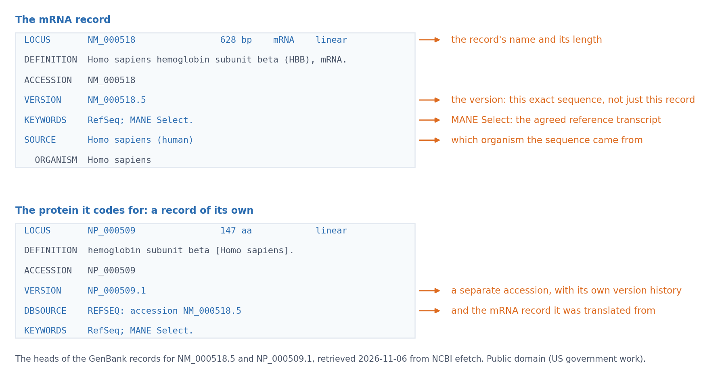
NM_000518.5 and the protein NP_000509.1 it codes for. The accession names the record, and only the version after the dot names this exact sequence. The protein carries its own accession and its own version history, and its DBSOURCE line names the mRNA it was translated from.
For the RefSeq mRNA accession NM_000518.5, the suffix .5 specifies sequence version 5. The protein accession NP_000509.1 has its own sequence-version history.
Sequence versions help distinguish changes to the sequence itself. Updates to references or other annotations can occur without changing that suffix. Consequently, reproducing an analysis of annotations may also require the downloaded record and its release or retrieval date. NLM’s introduction to accession numbers explains these distinctions.
A useful methods statement would be:
The analysis used the human HBB RefSeq mRNA sequence NM_000518.5.
When reporting other data, retain the corresponding context. Genome coordinates require an assembly, such as GRCh38. Protein isoform analyses require the relevant isoform identifier. UniProt records sequence and entry versions separately from its accession.
3.6.6 Following cross-references
A cross-reference connects a record to related information in another collection or resource. Websites commonly display these connections as clickable identifiers.
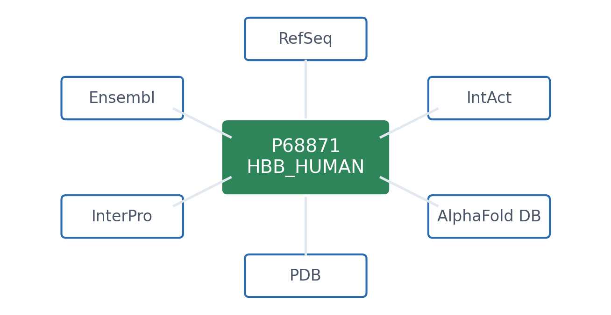
For example, the UniProtKB beta-globin entry P68871 links to:
- NCBI Gene
3043, describing the human gene that encodes beta-globin. - RefSeq
NP_000509.1, providing a corresponding reference protein sequence. - PDB
2HHB, describing an experimentally determined haemoglobin complex containing alpha- and beta-globin chains.
These links let us follow relevant information without repeating a name search at each website.
Check what relationship each link represents. It may connect corresponding records, a gene and its product, or a protein and a larger complex containing it. A cross-reference establishes a connection between records. The destination still needs to be checked for its organism, record type and supporting evidence.
The course notebook demonstrates how to retrieve specified records and inspect their identifiers and connections programmatically.
Further watching
EMBL-EBI’s Explore gene and transcript specific information contains a video demonstrating gene searching, gene and transcript identifiers, and cross-references to external resources.
While watching, consider which identifier specifies the gene, which specifies a transcript, and where an external cross-reference leads. The video uses Ensembl’s newer data platform, so its page layout may differ from other Ensembl interfaces.
For a demonstration closer to the protein-search example, How to search UniProtKB is a suitable alternative.
Further reading
- NLM, What are accession numbers at NCBI?, a short explanation of accession formats, prefixes and sequence versions.
- HGNC, Frequently asked questions, explaining approved gene symbols and descriptive names.
- Ensembl, Stable identifiers, explaining identifier formats and the different versioning rules for genes, transcripts and proteins.
3.7 Three ways into the data
Once you have an identifier, how you retrieve the record depends on what you want to do with it. You might read it on a database website, fetch it with a command or script, or explore its genomic context in a genome browser.
A database record page is convenient when you want to read one entry, download its sequence or follow its references. UniProt, for example, lets you inspect the beta-globin entry and the evidence behind its annotations. UniProt beta-globin record.
Command-line or programmatic access helps when a retrieval needs to be repeated or the result will feed into an analysis. A command can fetch a file, and a script can check and process what comes back. An application programming interface, or API, tells you how to request the data and which formats you can get.
A genome browser is useful when you want to know where something lies on a chromosome or how it relates to nearby features.
3.7.1 What makes a genome browser different?
A transcript accession identifies one HBB record. In a genome browser, we can see where that transcript sits on a reference chromosome. We choose an organism and assembly, then look at the region around the gene. The DNA sequence, gene annotations and variants are arranged in tracks that share a coordinate ruler. In one window we can see HBB beside a neighbouring gene, line up a variant with an exon and open the records behind those features.
The choice of transcript matters. A variant can fall in an intron of one transcript and have a different annotation in another. The window on screen can also extend well beyond the sequence we need. Once we select a transcript, the browser can offer its genomic DNA, spliced sequence and encoded protein. The assembly and transcript give us a way to check what we’re looking at and what we’ve downloaded. UCSC Genome Browser guide · Ensembl sequence export guide.
3.7.2 Read the chromosome like a map
We find human HBB on chromosome 11 in the UCSC Genome Browser. The assembly is GRCh38, which UCSC calls hg38. The coordinates above the tracks mark the window we’re looking at. When we zoom in, that window narrows, while the annotated transcript keeps its position on the same assembly. If we want to recreate this view later, the assembly, interval, strand, track and transcript accession are more informative than a screenshot alone. Open the HBB region in UCSC.
At a closer scale, the transcript appears as blocks joined by lines. The blocks are exons, and the connecting lines mark introns. Thick parts of the blocks show the coding sequence and thin parts show untranslated regions. The small chevrons point left because HBB is transcribed from the reverse strand, toward lower reference coordinates. An overlapping feature can look like part of the same gene, but opening it reveals its own label and record. UCSC Genome Browser guide · UCSC gene track conventions.
3.7.3 One transcript, four useful sequences
A colleague asks for the sequence of human HBB. We ask what they plan to do with it. They might want to examine DNA near a variant, see where two exons join, or compare beta-globin with another protein. A genome browser brings these related sequences together so you can inspect or download them from one place.
We start with the reference transcript NM_000518.5. If our colleague wants to look at an intronic variant, the genomic span of this transcript contains the site. Its 1,608 bases cover the exons and the introns between them. The whole gene or the browser window can cover a wider interval, so the export coordinates matter.
If the question is which exons meet in the mature RNA, the spliced transcript joins them into a 628-base sequence. It includes both untranslated ends. In a download labelled cDNA, the RNA sequence is written with DNA letters, so T appears where the RNA has U. If our colleague needs only the stretch from the start codon through the stop codon, the coding sequence has 444 bases. The remaining 184 bases of the spliced transcript belong to the untranslated regions.
For an amino-acid alignment, we’d send the linked beta-globin protein sequence, NP_000509.1. It has 147 amino acids. The last triplet of the coding sequence signals termination and contributes no amino acid.
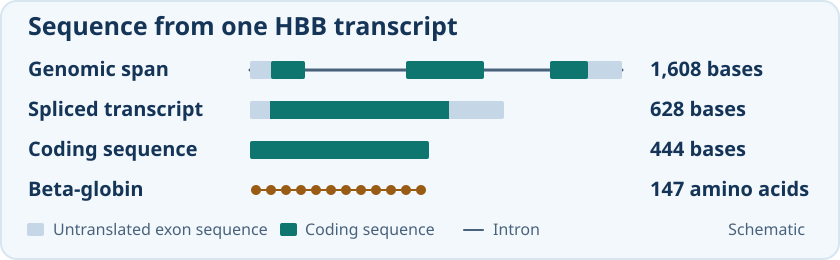
The FASTA header and sequence length help us tell which file we received. A genomic export can follow either the reference chromosome or the direction of transcription, depending on its settings. For an RNA or coding sequence export, the length helps us check whether the untranslated ends were included. RefSeq transcript · RefSeq protein · Coding sequence and translation.
3.7.4 The same region, different questions
When we open the HBB region in UCSC, several tracks are already visible. We first want to see where the exons lie, so we keep the curated RefSeq transcript on screen and hide the tracks we don’t need. The Visible Tracks group below the browser image shows which tracks are on. Where a track offers both modes, dense compresses it into one row, while pack keeps individual features labelled in a compact view. If we want to see how another annotation describes the transcripts, we can add GENCODE beside RefSeq. UCSC track display controls.
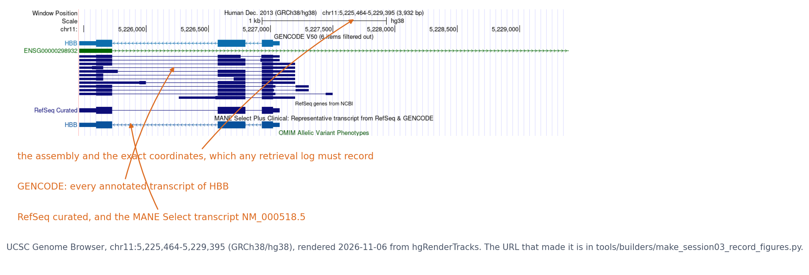
The exon map gives us a reference point for our next question. Which parts of this region have been conserved across species? We stay at the same coordinates and add a conservation track, which lets us compare the signal over the exons and nearby DNA. A question about gene activity would bring in different tracks. RNA sequencing coverage can show where RNA was detected in a particular tissue, while a regulation track might show where DNA was accessible in a particular cell type. The track description tells us which species, tissue or assay contributed to the view.
In UCSC, these datasets are grouped by type, and Track Search helps us find one by name. Some tracks offer subtracks, filters or settings such as the vertical scale of a signal plot. In Ensembl, the Track panel lets us change which tracks are visible and find out what they contain. If something we expected is missing, its track may be hidden or filtered, or it may need a closer zoom. Tracks can also draw on the same dataset, which matters when we compare their annotations. UCSC track settings · Ensembl Track panel guide.
We can now ask where a known single-base change falls in this region. Does it lie in an exon or in an intron of our reference transcript? We keep RefSeq visible and add the ClinVar single-nucleotide variants track.
3.7.5 From a variant to its evidence
With ClinVar lined up beside curated RefSeq, we can see two variants at different places in HBB. The first falls in a coding exon. In the transcript it is NM_000518.5:c.20A>T, a change that replaces glutamate with valine in beta-globin. The ClinVar record also gives NC_000011.10:g.5227002T>A on GRCh38. The letters look different because the c. description follows the transcript and the g. description follows the forward chromosome reference. HBB is on the reverse strand, so the letters in the two descriptions are complementary. ClinVar record for the coding variant · HGVS sequence numbering.
The other variant, NM_000518.5:c.93-21G>A, falls in an intron, 21 bases before coding base 93. It’s the sort of change our colleague would need genomic DNA to locate. The reference spliced transcript omits that intron, but a change in the intron can alter where the cell splices the RNA. The ClinVar record takes us from the position in the browser to submissions and references. In Figure 3F of a study by Patsali and colleagues, we can see how the researchers measured normal and aberrantly spliced HBB RNA. That measurement addresses what happens to the transcript. ClinVar record for the intronic variant · Patsali and colleagues’ splicing study.
3.7.6 Same locus, another browser
Our colleague opens Ensembl and finds HBB in the same region of chromosome 11. The controls look different, but the assembly, coordinates and strand tell us whether we’re looking at the same place. To compare our downloads, we also need to know whether the selected transcripts match.
The MANE Select label connects Ensembl transcript ENST00000335295.4 to RefSeq transcript NM_000518.5. The pair has matching exon coordinates, coding regions and sequence. If our two files differ, we have somewhere to look for an explanation. One of us may have included introns, exported a wider region or used a different orientation. Ensembl HBB Feature Explorer · NCBI MANE project.
NoteOptional example: download first, process next
Our colleague also wants to save the beta-globin amino-acid sequence for an analysis. We already know its UniProt accession, so a single GNU Wget command saves the sequence as FASTA.
wget -O P68871.fasta https://rest.uniprot.org/uniprotkb/P68871.fastaThe file starts with a header marked by >, followed by the amino-acid sequence. This download contains one record. A search result or a larger collection can contain many, so checking the headers tells us what we received. A script can count or filter the records before they go into an analysis. FASTA for P68871.
The FASTA file is ready to use in a protein alignment. If our colleague also needs the organism and sequence length in a table, the same UniProt service can return the entry as JSON. Python can read those named fields directly.
import json
from urllib.request import urlopen
url = "https://rest.uniprot.org/uniprotkb/P68871.json"
with urlopen(url, timeout=20) as response:
entry = json.load(response)
print(entry["primaryAccession"])
print(entry["organism"]["scientificName"])
print(entry["sequence"]["length"])The output is P68871, Homo sapiens and 147. Those fields confirm which record came back. Keeping the file with its request URL, accession and retrieval date lets us trace the result later. The course notebook extends the example to annotations and cross-references. JSON for P68871 · Notebook record check.
Further reading
- UCSC, Configuring the Genome Browser display, explains how to change the tracks and the detail they display.
- EMBL-EBI Training, Downloading sequences from Ensembl, shows how to choose genomic, transcript, coding and protein sequence exports.
3.8 Literature search: finding the evidence
Biological databases connect sequences, annotations and links to publications. The publications help us understand how those claims were established: which material was examined, what was measured and how the researchers interpreted the result. Literature searching therefore continues the question asked throughout this session: what supports the information we want to use?
Our HBB examples give that question a concrete setting. Knowing where an intronic variant lies does not, by itself, show how it changes RNA splicing. We need studies that investigated that effect. This section follows the route from a biological question to candidate papers, then from a cited paper to its experimental evidence. PubMed provides a convenient example of database searching, while conversational AI provides another way to develop leads. Both routes lead back to the original sources.
3.8.1 Build a search that answers your question
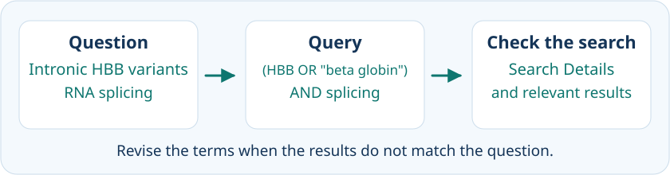
Our biological question is how intronic variants affect RNA splicing in human HBB. We then ask whether researchers measured RNA, which transcript forms they detected, and in what cells. This gives the search a purpose beyond finding papers that mention the gene.
Literature databases, scholarly search engines and reference lists offer complementary routes into published research. Their coverage and search rules differ. PubMed is our worked example for biomedical literature. Europe PMC provides another life-sciences literature resource, and a question extending into another discipline may need a search service with different coverage.
3.8.1.1 Find the words behind the question
The wording in a database record is not necessarily the wording in a paper. HBB, beta-globin and β-globin can describe the same human gene or its product, while a disease may appear as thalassemia or thalassaemia. A broad gene query helps reveal the vocabulary authors use, but it can also retrieve work on other species or questions.
Variant names add another layer. The intronic change HBB:c.93-21G>A is also known as IVS-I-110 (G>A), a name found in research article titles. Searching only one form could miss useful work. Other HBB intronic variants have their own names and require their own searches. Patsali and colleagues’ article makes this connection explicit.
A starting query might therefore combine alternative names with the biological process:
(HBB OR "beta globin") AND splicingThis is a starting point to refine, rather than a complete catalogue of relevant wording. A useful result may introduce a historical variant name, an assay or a more specific process. Searching develops as understanding of the question develops.
3.8.1.2 Broaden, narrow or exclude
Boolean operators describe how sets of matching records combine. OR collects alternatives: HBB OR "beta globin" includes either name, with records matching both counted once. AND keeps their overlap with another concept: (HBB OR "beta globin") AND splicing requires the gene-name group and splicing. NOT removes matching records from a starting set. These relationships help predict how a query should change before inspecting the results.
Parentheses make the intended groups visible. PubMed processes Boolean operators from left to right, so:
HBB AND splicing OR "beta globin"allows the beta-globin phrase alone to qualify. The parenthesised query above requires splicing for both gene-name alternatives. Other services may use a different default order. NLM’s Boolean guidance explains PubMed’s interpretation.
Exclusions deserve care. A relevant experimental paper might mention a topic we intended to exclude. Removing reviews can help explore a result list, but the papers left behind still need to be identified by their content. A smaller set helps only when it better answers the question.
3.8.1.3 Small symbols, different searches
Quotation marks request a phrase: "beta globin" keeps those words together in that order, whereas beta AND globin treats them as separate concepts. PubMed also expands many unquoted searches through Automatic Term Mapping, including subject headings and word variants. Quoting changes this interpretation as well as word adjacency. If a requested phrase is absent from PubMed’s phrase index, PubMed may ignore the quotes and display a warning. NLM’s phrase-search tutorial explains these differences.
A wildcard collects word variants. In PubMed, thalass* can match thalassemia, thalassaemia and their adjective forms. The asterisk stands for zero or more characters; at least four characters must precede the first wildcard. Wildcards bypass Automatic Term Mapping for that term, so they can lose related concepts that an ordinary search would add. Wildcard rules are specific to the service.
An unrestricted PubMed search searches publication records, rather than the full text of every paper. Field tags specify where a match must occur. PubMed’s HBB[tiab] searches the Title/Abstract field, which also includes author keywords; review[pt] selects the Review publication type. Thus, searching the word review differs from selecting records classified as reviews. Using NOT review[pt] excludes that type but does not establish that every remaining paper reports original research. These restrictions concern record fields and article types. They do not assess study quality. NLM’s field-tag explanation describes the available choices.
PubMed’s Advanced Search → History → Search Details shows its interpretation of a query. Result counts change as records are added and updated. The useful comparison is whether changing the query brings relevant papers into view. Advanced Search brings the history and query details together.
3.8.2 From a hit to the whole paper
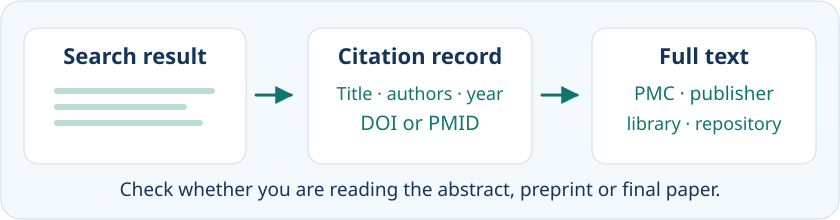
3.8.2.1 Different papers, different purposes
The question determines which results deserve attention. A review can introduce terminology, explain the biology and point to earlier studies. For example, beta-thalassemia is an inherited disorder that reduces beta-globin production. An original research article can report how an HBB splice effect was measured. For orientation, the query HBB AND thalass* can be explored with PubMed’s Review article-type filter. Date and other filters can further shape the list, although metadata-based filters may omit records whose indexing is incomplete. PubMed’s filter overview describes their scope.
3.8.2.2 Follow the route to full text
One example is Jaing and colleagues’ 2021 Molecular genetics of β-thalassemia: A narrative review. Its citation record identifies the paper and provides an abstract and full-text links. PubMed holds citations and abstracts; PubMed Central (PMC) is a full-text archive. The review’s PMC link opens the article, while publisher links and university-library access offer other routes for other papers. A freely available copy is convenient, but availability alone does not determine relevance. NLM explains the full-text access routes.
3.8.2.3 Borrow the paper’s vocabulary
The same review has an indexed subject heading, beta-Thalassemia / genetics. These Medical Subject Headings (MeSH) provide a consistent vocabulary across papers using different words. NLM’s MeSH introduction explains how this supports discovery.
In a PubMed record, an asterisk beside a MeSH heading marks a major topic. Following this heading’s Search in PubMed link produces:
"beta-Thalassemia/genetics"[MAJR]The slash specifies the genetics aspect; [MAJR] requests a major-topic search. The displayed asterisk is a topic marker here, rather than a wildcard. MeSH major-topic guidance explains the notation.
This route can reveal related work missed by the first wording. It complements keyword searching because some PubMed records lack MeSH terms or await indexing. Active filters also carry into subsequent searches: a Review filter left on will continue to shape the new list. A promising paper therefore supplies both evidence to read and vocabulary for the next search.
3.8.3 Ask AI for leads
Our earlier HBB database example concerned c.93-21G>A, also called IVS-I-110. A literature search can begin from that particular variant or broaden to a biological question: how can changes inside HBB introns affect the RNA? A general-purpose AI assistant offers another way to develop that question alongside database searches. The useful outcome is a set of candidate papers and questions to investigate in those papers.
Successive prompts can make the information need more explicit, moving from an explanation towards papers whose evidence can be examined. The prompts below illustrate such a conversation.
3.8.3.1 Begin with the biology
The first prompt is:
How do intronic variants affect RNA splicing in human HBB?
An explanation might suggest that an intronic change can alter a splice signal, allowing part of an intron to remain in the mature RNA. This gives us a possible mechanism to investigate. It also helps identify useful terms for further searching. A general explanation, however, leaves open which variant was tested, in what experimental system, and with what result.
The next prompt asks for a different kind of answer:
Find two primary studies that measured how intronic variants affect human HBB splicing.
Primary studies report the authors’ own experiments or observations. Asking for two keeps the initial reading manageable. Two papers that address different parts of this question are Reimer et al. (2021; PMID 33440169), concerning IVS-110 and splicing in a cell model, and Nualkaew et al. (2019; PMID 31113996), concerning partial restoration of correct splicing in cultured patient-derived cells carrying IVS2-654. IVS-110 and IVS2-654 are different variants. The broader question has brought us to studies of related biology, rather than two experiments on the same change. We choose Nualkaew’s paper below to examine a measured attempt to restore correct splicing. Reimer et al.; Nualkaew et al..
3.8.3.2 Ask for papers, then for evidence
A third prompt asks for a route into the evidence:
For each study, give the PMID, what the researchers measured, and the figure that supports the finding.
These details have distinct purposes. The identifier helps locate the publication. The measurement tells us what kind of observation the answer rests on. The figure gives us a place to begin reading. For Nualkaew’s paper, these details lead us towards RT-PCR and Figure 3A–B.
This approach is available through general-purpose conversational AI; it does not depend on an AI tool built specifically for PubMed. The distinction that matters is what information the assistant actually accessed. An answer generated from learned information has a different basis from one that retrieves publication records or works from an article supplied in the conversation. A prompt can make the desired basis explicit:
Search for up to two relevant primary studies. Give direct links to publication records, explain their relevance, and identify any details you could not verify. Fewer papers are acceptable.
3.8.4 Put the claim beside the evidence
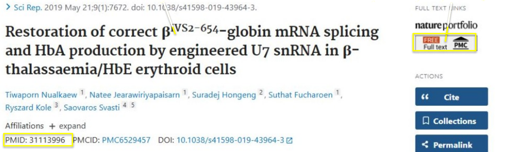
A citation answers “Which paper?” Reading its evidence answers “What does this paper support?” These are separate achievements. Nualkaew and colleagues provide a worked example of moving between them.
3.8.4.1 Find the paper behind the citation
PMID 31113996 leads to the article Restoration of correct βIVS2-654-globin mRNA splicing and HbA production by engineered U7 snRNA in β-thalassaemia/HbE erythroid cells. Matching the title, authors and year establishes that we have reached the suggested source. The abstract establishes relevance; the full text provides the setting, methods, controls and results needed to assess the claim. PubMed record.
The short claim to investigate is that an intervention partly restored correct HBB splicing in cultured cells. That wording already raises useful reading questions: which cells, which intervention, and which measurement demonstrates restoration?
The notebook’s publication check retrieves a title and DOI from a supplied PMID. It then separates that identity check from reading the paper’s supporting result.
3.8.4.2 Find the measurement behind the claim
The experiment used cultured erythroid cells derived from patients with βIVS2-654-thalassaemia/HbE. The researchers introduced a lentiviral vector encoding engineered U7.BP+623 snRNA and compared the resulting cultures with untreated, vector and scrambled-sequence controls.
Figure 3A–B examines RNA splicing by RT-PCR. Panel A distinguishes the shorter, correctly spliced product from the longer aberrant product. Panel B and the Results report a mean of 8.25% correctly spliced β-globin RNA on day 10. This describes the RNA measurement, rather than the percentage of cells corrected. Panels C–D assess haemoglobin A separately by chromatography. The RNA and protein measurements address related biological outcomes, but they support different statements. Original Results and Figure 3.
3.8.4.3 Keep the conclusion within the experiment
The resulting conclusion can now be stated precisely: in cultured patient-derived erythroid cells carrying IVS2-654, an engineered U7 RNA intervention partially restored correctly spliced HBB RNA. This is evidence of an experimental effect in that setting. It does not establish a clinical cure.
This way of reading turns a brief summary into an explanation whose scope we can assess. The model defines where the result applies; the intervention defines what changed; the comparison helps interpret that change; and the measurement defines what was observed. The figure legend, Results and relevant Methods belong together in that assessment. An attractive figure or a sentence in the Discussion alone may leave essential details unresolved.
3.8.5 When a convincing answer goes wrong
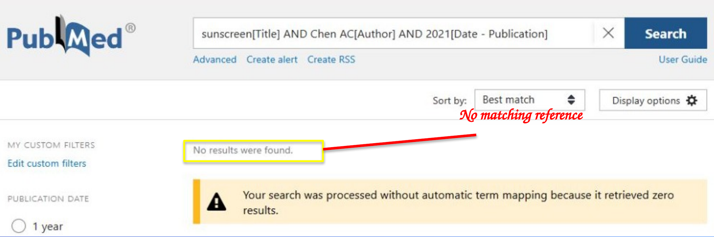
AI-assisted discovery can fail at either of the two checks: the suggested publication may be incorrectly identified, or its findings may be misrepresented. The optional cases below document actual historical examples of both failures.
3.8.5.1 A convincing citation can lead to the wrong record
A suggested reference can combine plausible authors, a title and journal details with an identifier belonging to another publication. An unsuccessful search alone does not establish fabrication, because incomplete indexing or inaccurate metadata can also prevent retrieval. Matching the citation to an authoritative publication record addresses the first check introduced above: publication identity.
NoteOptional example: a fabricated sunscreen review
Bhattacharyya et al. (2023) published actual ChatGPT-3.5 output generated on 12 April 2023. Their Figure 1 includes a supposed 2021 review by Chen and colleagues about sunscreen and skin-cancer prevention, complete with journal details and PMID 33635047. The authors’ audit classified this reference as fabricated after searches across several resources. The supplied PMID is real, but identifies a different paper about enrichment of histidine-rich proteins. A working link therefore does not establish that the surrounding citation is accurate. Published output and audit; record for PMID 33635047.
An unsuccessful PubMed search alone would be weaker evidence: incomplete indexing or inaccurate metadata can also prevent retrieval. Here, the published audit and the identifier mismatch provide independent grounds for rejecting the suggested reference.
3.8.5.2 A real paper can acquire the wrong conclusion
Finding a real paper completes only the first check. A summary may still confuse related studies, change the population described or omit a result that changes the conclusion. These errors become visible through the second check: comparing the attributed claim with the relevant result in that paper.
NoteOptional example: a real study with the wrong summary
Weinberg et al. (2024) documented another failure. On 11 May 2023, ChatGPT 3.5 was asked to summarize a named paper about saline and albumin in patients with traumatic brain injury. Only the paper title was supplied; the article was not uploaded, and the model had no internet access. Its answer reported “no significant difference in mortality between saline and albumin.” The evaluators found that it blended details of the broader SAFE trial with the later traumatic-brain-injury study. Weinberg et al..
The original 2007 NEJM paper reported a post hoc follow-up of SAFE participants with traumatic brain injury. At 24 months, mortality was 33.2% in the albumin group and 20.4% in the saline group (P = 0.003). Its conclusion associated albumin with higher mortality in this population. The inaccurate summary had removed the central finding. Original study.
This documents a particular historical test. It does not measure the reliability of current AI tools or test the interpretation of an uploaded full-text article.
3.8.5.3 A better prompt still needs checking
An AI-generated reading list may also omit relevant work. Comparing its suggestions with an independent database search and following references from useful papers helps reveal what the first route missed. Keeping the search service, exact queries, filters, dates, and any AI prompts makes the route to the papers easier to explain and revisit.
A more careful prompt can encourage direct links, explicit uncertainty and a shorter list when evidence is limited. These improve the request, while the source evidence determines how much confidence to place in the answer.
Further watching
- NLM, PubMed Online Training: short Quick Tours on topic searching, finding a citation and reaching the full text. The topic-search and full-text videos take approximately one and two minutes respectively.
Further reading
- NLM, PubMed User Guide, for current search syntax, Search Details, filters and full-text access.
- EMBL-EBI Training, Europe PMC quick tour, for another route into life-sciences literature.
- The cited primary studies and published AI evaluations provide the original evidence for the worked examples above.
3.9 Conclusions: from questions to evidence
A useful database search begins with a biological question. Human HBB can lead us to a gene record, a transcript, an amino-acid sequence, a structure or a study of RNA splicing. These records concern related objects, but answer different questions. Naming the organism and selecting the right biological level helps us choose an appropriate starting point.
Names and symbols help us discover records. Identifiers, sequence versions and cross-references let us specify what we used and connect it to related information. A record page supports careful reading, a command or script supports repeated retrieval and processing, and a genome browser brings sequences and other annotations into a shared genomic context. The most useful route depends on the question and the task.
The final step is to ask what supports the answer. A submitted sequence, a computational prediction and an experimental measurement have different origins; a curated entry can contain all three. Literature searches help us follow the underlying studies, while AI can suggest useful terms and candidate papers. Neither a convincing answer nor a familiar database name replaces checking the source and the particular claim. Keeping the selected records, retrieval details and supporting evidence makes an answer easier to assess and an analysis easier to reproduce.
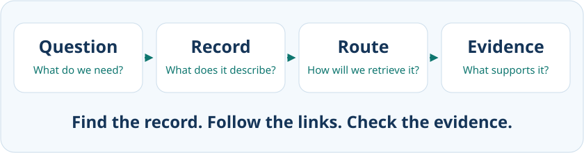
NoteOther resources worth knowing
These resources are not needed for this course, but you will meet them:
- Variants: dbSNP and ClinVar (NCBI; ClinVar adds clinical significance), the European Variation Archive (EMBL-EBI), and the GWAS Catalog, which records statistical associations between variants and traits from genome-wide association studies. OMIM (Johns Hopkins) is the classic reference for genes and Mendelian disease.
- Cancer genomics: TCGA, through NCI’s Genomic Data Commons, and COSMIC (Sanger Institute) for somatic mutations in cancer.
- Systems: PRIDE (mass-spectrometry proteomics data), Reactome (curated pathways) and BioModels (computational models of pathways).
3.10 The course notebook
The course notebook demonstrates a small set of programmatic tasks starting from supplied accessions. You retrieve records, inspect returned fields, parse sequence information and check identifiers, molecule types and cross-references. Comparing an archival record through all three INSDC partners illustrates shared data behind different interfaces. These examples show how code can repeat and document a retrieval; they do not replace the biological investigation in the lab. To run this version in Google Colab, download the notebook and upload it using File → Upload notebook. The badge at the top of the notebook opens the published course copy.
NotePractice with HBB
These reading exercises extend the worked HBB example. The graded lab uses human myoglobin and has its own instructions and questions in Canvas.
Identifiers and evidence. Open the human HBB gene record (NCBI Gene 3043), RefSeq transcript NM_000518.5, protein NP_000509.1 and UniProt entry P68871. Make a four-row table stating what each record represents, its identifier and version where applicable, and a cross-reference connecting it to another record. Explain why the symbol HBB alone does not specify the exact transcript sequence used. Then choose one biological claim in the UniProt entry, follow its evidence or reference, and briefly describe what supports that particular claim.
Retrieval and record check. Use either UCSC or Ensembl, with human GRCh38/hg38, and select one HBB protein-coding transcript. Retrieve three FASTA outputs through that resource:
- The genomic sequence spanning your selected transcript, with no additional flanking bases.
- The full spliced transcript/cDNA sequence, including its untranslated regions.
- The protein encoded by the selected transcript.
Keep a retrieval log with the resource and annotation source, organism, genome assembly, genomic interval and orientation, transcript/protein identifiers and versions, sequence types and lengths, and retrieval date. Use it to explain one difference between the genomic, transcript and protein outputs. Compare your log with another student’s and check whether it contains enough information to reproduce the selections.
3.11 The lab
The three-hour lab follows the same path with a new example: human myoglobin (gene symbol MB). You start by comparing a submitted DNA record from the three INSDC partners, then check how a reference transcript connects to its protein. In the database websites, you locate the transcript on a specified genome assembly, compare a reviewed protein annotation with an InterPro record, and use the notebook and record pages to see how an experimental structure and a predicted model were obtained. The last part follows a reported protein interaction to its evidence record and paper. These checks form a small dossier in which each conclusion can be traced back to the record or study that supports it.
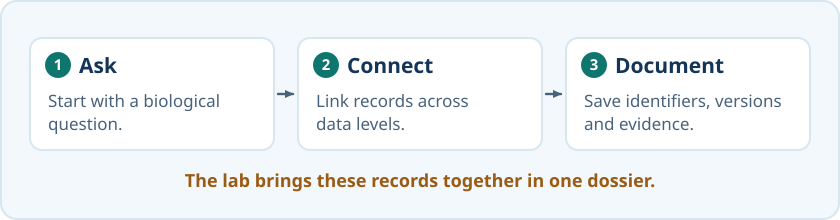
3.11.1 Submitting this lab
Open the Session 3: Biological Databases module in Canvas for the lab instructions, ten graded questions and the feedback survey. Download the Session 3 lab notebook and open it in VS Code or upload it to Colab. Use the notebook outputs and database pages to choose your answers as you work. Some questions ask for one answer and others ask you to select all correct answers. Each question is worth one point. Five points meets the pass threshold. Check Canvas for the deadline and feedback survey.
3.12 What’s next
Session 4 picks up where the cross-references leave off. Once you can retrieve two related sequences, the next question is how to line them up and score how similar they are, and that is sequence alignment.
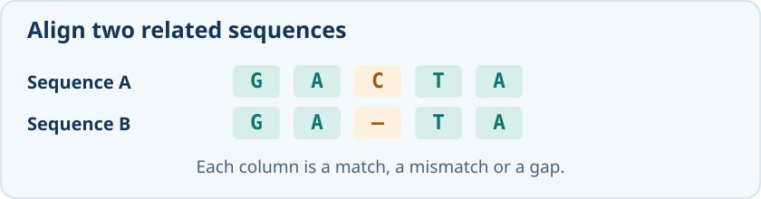
As an illustrative baseline, 50 PB is 50,000 TB, requiring 12,500 drives of 4 TB nominal capacity. A 4 TB Seagate Expansion drive was advertised at SEK 2,198 including VAT on 24 October 2026, giving SEK 27,475,000 for those drives. The reported SRA total exceeds 50 PB. This comparison excludes additional capacity for backups, servers and operating costs, and uses individual retail prices rather than a bulk-purchase quotation.↩︎